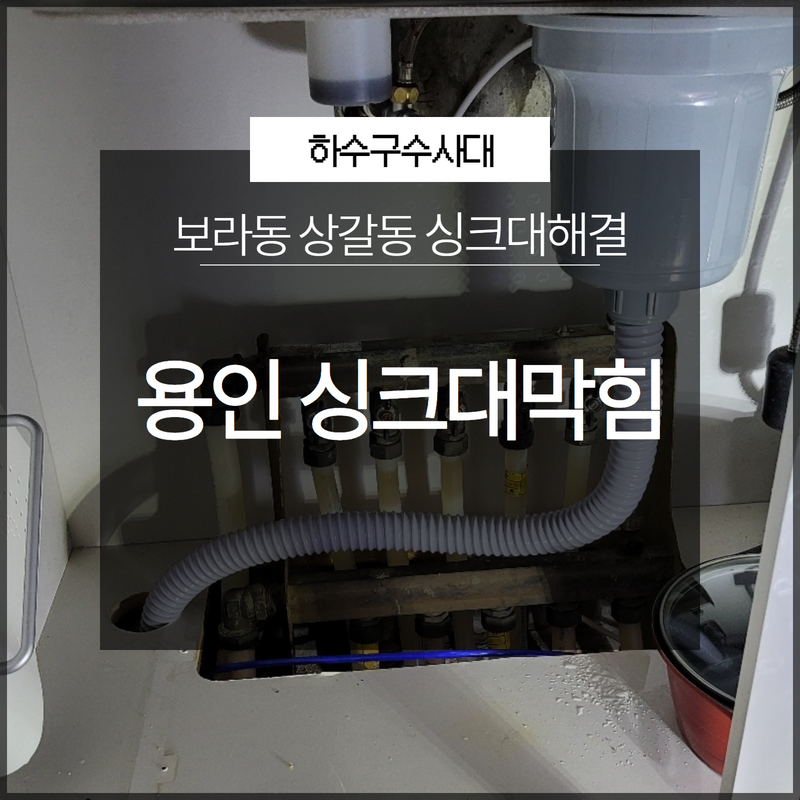
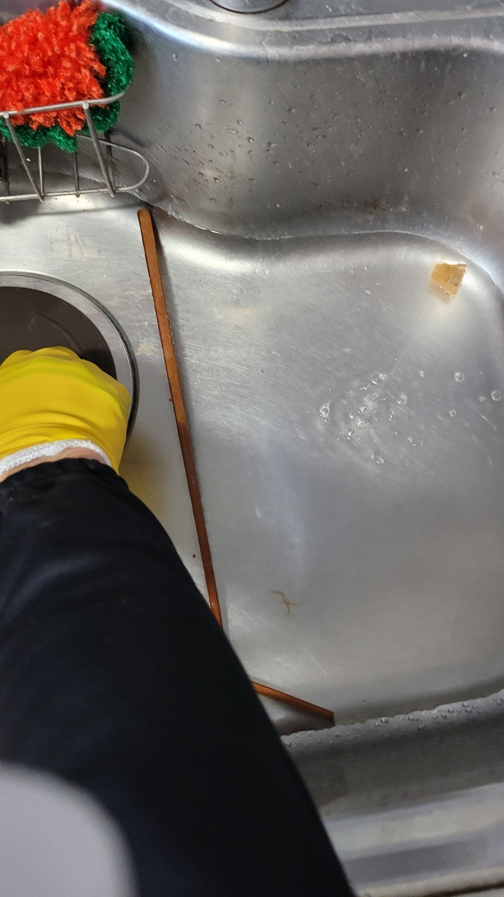
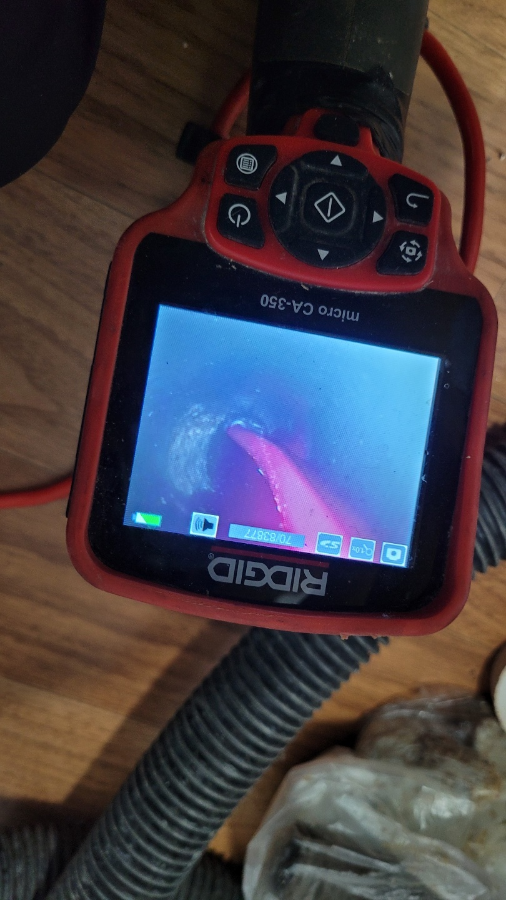
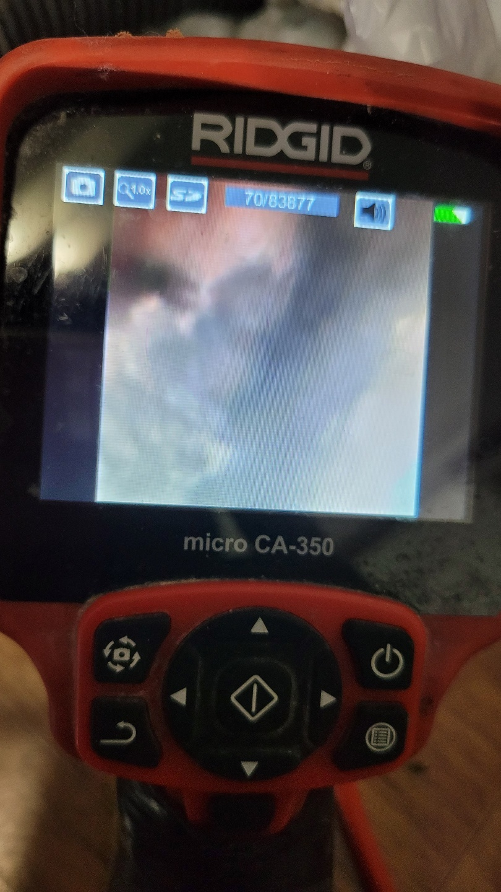

🏠 용인 기흥구싱크대막힘 보라동 상갈동 신속한 문제해결!
용인 기흥 싱크대막힘 전문 시공 후기

📋 작업 개요
- 위치: 용인 기흥, 기흥, 용인
- 서비스 유형: 싱크대막힘, 하수구막힘, 배관막힘, 배관청소, 고압세척, 악취차단
- 작업 일시: 2023. 1. 22. 20:39
- 업체명: 하수구수사대 (010-5615-2118)
🔍 문제 상황
안녕하세요 하수구수사대입니다.
어느 날 갑자기 하수관이 막히게 되면서 물이 잘 내려가지 않게 되면 일상생활을 하는데 불편한 점이 매우 많다고 할 수 있는데요 대부분의 경우는 물이 잘 내려가고 있지만 문제없이 배출이 된다고 해서 방치를 하게 되는 경우에는 갑작스럽게 어려운 상황으로까지 이어질 수 있는 것입니다. 그래서 평소보다 물이 잘 내려가지 않는 것 같은 상황이라면 하수구를 정기적으로 관리를 해주는 업체를 통해서 해결을 하여야 하는 것입니다.
이번에 방문한 현장은 용인 기흥구싱크대막힘 보라동 상갈동으로 잘 이용하고 있던 화장실에서 어느 날 갑자기 물이 잘 배수되지 않는다고 의뢰를 해주셨습니다. 현장의 후기를 통해서 어떻게 해결을 하였는지 알려드리도록 하겠습니다.

🔎 원인 분석
💡 전문가 진단: 배수구 같은 경우는 평상시에 잘 관리를 해주지 않게 되면
배수구 같은 경우는 평상시에 잘 관리를 해주지 않게 되면
어느 순간부터 막힘이 발생될 수밖에 없는데요 실제 현장에 방문을 해서 상태를 확인해 보았습니다. 정확한 배관의 상태를 확인하기 위해서는 먼저 고여있는 물을 제거해야 하는 상황이었습니다. 물이 바닥 위로 올라와서 잠겨있는 상태에서 확인을 하는 것은 어려움이 있는 상황이어서 점검을 하기 힘든 상황이라고 할 수 있습니다.
먼저 석션기를 이용해서 고여있는 물과 이물질 등의 덩어리 등을 먼저 제거를 해서 작업하기 쉬운 상태의 환경으로 준비를 해서 진행을 하게 됩니다. 고인 물이 모두 빠진 경우에는 하수구의 상태를 확인해 볼 수 있었는데요 하수구 커버부터 분리를 해서 내부를 확인하는 작업을 하였습니다. 배수구에서 올라오는 악취를 차단하는 방법으로 보통 커버를 사용하는 분들이 많이 있는데요 하지만 내부에 이물질이 많이 있으면서 더러운 상태의 경우라면 커버를 씌워두었음에도 불구하고 악취와 역겨운 냄새를 동반해서 올라오게 되는 것입니다.
하수구막힘의 경우는 빠르게 작업을 하기 위해서는

🔧 작업 과정
정확하게 원인을 찾아서 해결을 하는 것이 중요하다고 할 수 있습니다. 배관 내시경을 이용해서 배관 내부의 상태를 확인해 보니 매우 더러운 상황이었습니다. 각종 기름때와 석회질 그리고 머리카락 등등의 이물질들이 서로 엉키게 되면서 막혀있는 모습을 볼 수 있었습니다.
이렇게 이물질이 들어가지 않도록 잘 확인을 하지 않으면 금방 쌓이게 되는 것입니다. 이러한 상태로 시간이 오래 지체되게 되면 이물질들이 배관 벽면에 더욱 강력하게 흡착이 되면서 부식까지 진행이 될 수 있습니다. 이물질들을 제거하기 위해 서는 먼저 덩어리를 제거를 해야 하는데요 석션기를 이용해서 사이즈가 큰 이물질부터 제거를 해주게 됩니다.
용인 기흥구싱크대막힘 보라동 상갈동 계속해서 상당한 양의 이물질이 나오는 걸 볼 수 있는데요.
이물질들을 모두 건져내어 서 따로 버려주는 작업을 하게 됩니다. 이것을 그 떠내려가게 하면 또 다른 곳에서도 문제를 일으킬 수 있기 때문에 여러 장비의 도움이 필요할 수 있습니다. 다음으로 이물질들을 잘게 부숴주기 위해서 플렉스 샤프트라는 기기를 이용을 하는데요 물과 함께 섞어서 밀어내 주는 방식이기 때문에 배관에도 큰 부담을 주지 않고 안전하게 작업을 할 수 있습니다.
이렇게 이물질을 잘게 부수면서 내부를 청소해 주시게 되면
단단한 이물질들도 모두 제거를 하실 수 있게 됩니다. 마지막으로는 고압세척을 통해서 내부에 남아있는 찌꺼기들까지 꼼꼼하게 제거를 하는 작업을 하게 되는데요 고압의 물을 이용해서 이물질들을 모두 부수면서 내부를 청소하는 작업을 하게 됩니다. 이렇게 하면 이물질 제거와 함께 악취 제거까지 모두 할 수 있는 장점이 있는데요.


✅ 작업 완료
이렇게 모든 작업을 하고 이물질 제거를 완벽하게 해서
용인 기흥구싱크대막힘 보라동 상갈동 작업을 마무리하였습니다.



⚠️ 주방 싱크대 배관 막힘 예방 수칙
- ✅ 기름기가 묻은 식기나 프라이팬은 설거지 전 키친타올로 반드시 기름때를 닦아내세요.
- ✅ 주기적으로 싱크대 개수대에 뜨거운 물을 가득 받아 한 번에 내려 배관 내부 기름을 씻어내세요.
- ✅ 배수구 거름망을 미세한 필터로 사용하시고 음식물 찌꺼기가 틈으로 새어 들지 않게 관리하세요.
- ✅ 베이킹소다와 식초를 뜨거운 물과 함께 일주일에 한 번씩 부어주면 배관 살균과 막힘 예방에 좋습니다.
💡 핵심 정리
- 확실한 장비 작업(내시경 점검 및 샤프트 스케일링)으로 원인을 뿌리 뽑습니다.
- 작업 후 1년 이내에 동일한 부위 재발 시 100% 무상 A/S 서비스를 보장합니다.
- 서울 · 경기 · 인천 전 지역에 24시간 언제든 긴급 출동할 수 있도록 항시 대기 중입니다.
❓ 자주 묻는 질문 (FAQ)
🚨 용인 기흥 싱크대막힘 문제로 고민이신가요?
정확한 원인 진단과 확실한 시공으로 재발 없는 해결을 약속드립니다.
24시간 긴급 출동 | 서울 · 경기 · 인천 전지역 | 1년 내 재발 시 무상 A/S